현재 구현 · 00
현재 저장소의 세 구현 범위
어느 브랜치의 기능을 현재 구현이라고 부르는가?
main, prototype, guide-tool은 서로 다른 실행 제품이다. 이 문서는 셋을 합쳐 이미 구현된 하나의 앱처럼 표시하지 않는다.
세 선은 기능 범위의 분기이며 Git ancestry·병합 관계를 뜻하지 않는다. 원격 조회일은 2026-11-15이다.
현재 구현 · 01
main의 실제 모듈과 의존성
현재 CLI 기능은 어떤 모듈을 호출하는가?
CLI main()에 명령 분기와 조립이 모인다. 공통 원문은 Catalog가 읽고, 일정·평가·서식이 각자 표를 해석한다.
main에는 TUI 실행 분기가 없다. Catalog의 검색 메서드가 존재하는 것과 CLI에 guide search 명령이 노출되는 것은 별개다.
현재 구현 · 02
main의 실제 정보 모델
문서에서 추출한 정보가 어떤 형태로 기능별로 흘러가는가?
Document와 Cycle은 명시적 타입이지만 활동·평가·주차는 대부분 기능별 dict이다. 공통 RequirementInstance나 판정 이력 모델은 없다.
개념적 데이터 흐름도다. 저장된 관계형 DB나 이 이름의 테이블이 있다는 뜻이 아니다.
현재 구현 · 03
main의 현재 사용자 흐름
사용자는 현재 무엇을 입력하고 어떤 결과를 받는가?
문서 조회·활동 파일 생성·문서 작성·PDF 변환이 명령별로 나뉘며, 활동 JSON 전달과 실제 제출 확인은 사용자가 이어 붙인다.
파일 생성 성공은 LMS 제출 성공이나 규칙 충족으로 저장되지 않는다. main의 week는 현재 학사 주차보다 가까운 이후 수업일을 고른다.
현재 구현 · 04
main의 활동 수집·문서 생성 시퀀스
한 번의 활동 수집과 회의록 생성에서 무엇이 자동이고 무엇이 수동인가?
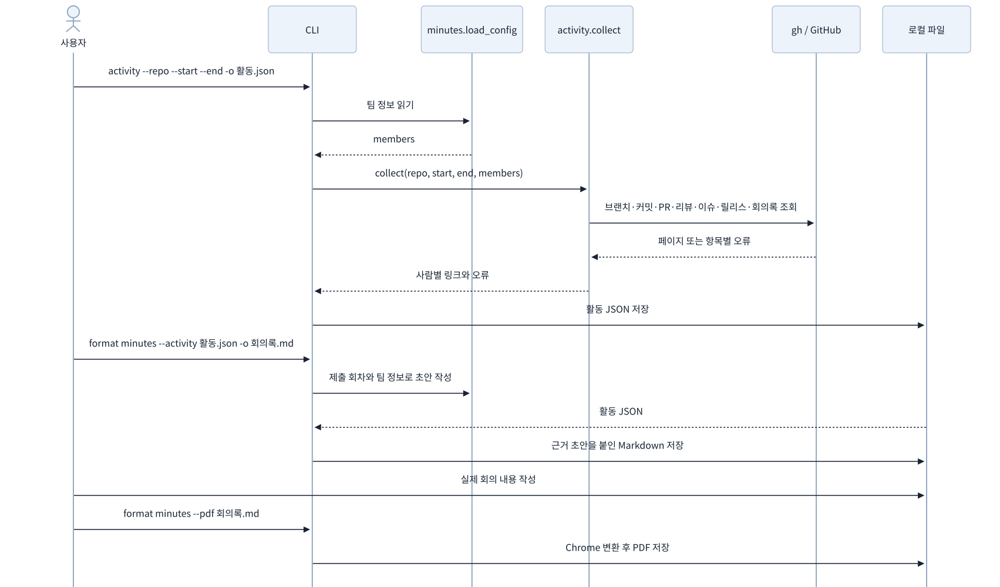
수집 실패는 항목의 error로 보존한다. 결과는 활동 근거 초안이며 평가 엔진으로 전달되지는 않는다.
현재 구현 · 05
prototype의 실제 모듈 구조
키보드 TUI의 화면·저장·수집은 어디에서 조립되는가?
tui.App이 화면 상태와 팀 설정, 활동 수집 스레드, 저장 갱신을 함께 조정한다. weeks.py에는 데이터 선택과 텍스트 렌더링·TUI 진입이 함께 있다.
course-project.json은 문서화된 설계 초안이다. 점선은 실행 연결이 없다는 표시다. 현재 check 명령은 준비중을 출력한다.
현재 구현 · 06
prototype의 현재 데이터·식별 모델
완료 표시와 활동 횟수는 무엇을 키로 저장되는가?
주차별 화면 데이터와 수동 완료, 주간 횟수는 분리되어 있다. 다만 기준·작업의 정의는 트리 JSON·코드 상수·원문에 나뉘고 판정 스냅샷은 없다.
Task 체크는 사용자의 수동 표시다. WeeklyAssessment.status는 주간 횟수 상태이며 학기 점수나 LMS 제출 판정이 아니다. 서로 다른 집계 구간을 자동 재배분하지 않는다.
현재 구현 · 07
prototype의 현재 사용자 흐름
주차 선택부터 완료 표시·활동 집계·회의록 작성까지 어떻게 이동하는가?
진입점과 작업 목록의 중심이 선택한 주차다. 사용자는 할 일·평가·팀 설정 탭을 오가며 서로 다른 종류의 상태를 편집한다.
할 일의 개인 담당 필터는 아직 연결되지 않았다. 바로 다음 주 이월과 모든 과거 미완료를 계속 보여주는 backlog는 다르다.
현재 구현 · 08
prototype의 현재 집계 상태 전이
수동 수정과 GitHub 갱신·실패가 만날 때 어떻게 처리되는가?
설정 revision이 바뀐 응답은 버린다. 성공한 항목만 갱신하며 실패 항목의 기존 값은 유지한다. 수동 횟수는 다음 성공 집계에서 바뀔 수 있다.
구현에서 보이는 동작을 추출한 상태도이며 실제 Enum 선언은 아니다. 성공과 항목별 오류는 한 응답에 공존할 수 있다.
목표 설계 · 미구현 · 09
목표 도메인: 기준을 적용하고 근거로 설명하기
사용자가 원하는 점검을 표현하려면 어떤 개념을 분리해야 하는가?
핵심은 주차 트리에서 기준을 복사하는 대신, 기준 정의를 사람·팀·기간에 적용해 생성한 적용 건에 증거와 판정을 연결하는 것이다.
이 대화에서 제안한 미구현 모델이다. 승인된 3인·3기능 변경이 곧 배점의 비례 환산을 뜻하지 않는다.
이 대화의 목표 설계이며 현재 미구현.
목표 설계 · 미구현 · 10
목표 ERD: 적용 건·증거·판정의 식별
과거 판정을 재현하고 여러 뷰에서 같은 기준을 보려면 어떤 관계가 필요한가?
기준과 적용 건을 분리하고 판정은 사용한 정책·증거 버전을 고정한다. 기간 변경이나 재수집으로 과거 판정을 덮어쓰지 않는다.
개념 ERD이며 DB 선택이나 최종 물리 스키마를 확정하지 않는다. predicate·coverage는 검증된 구조여야 하며 사용자 문자열을 eval하지 않는다. 관계 일부와 보조 조인 테이블은 가독성을 위해 생략했다.
이 대화의 목표 설계이며 현재 미구현.
목표 설계 · 미구현 · 11
목표 모듈과 네 레이어
CLI와 TUI가 어떤 인터페이스를 공유해야 모델이 화면에 종속되지 않는가?
UI는 요청·출력과 포커스를 담당하고 collect/check/explain이 조립을 담당한다. 판정 모듈은 관측 저장이나 터미널 조작 없이 결과를 반환한다.
미구현 설계안. 단일 로컬 프로그램 내부의 모듈 관계다. 별도 웹 서버·백그라운드 데몬·마이크로서비스 배포를 요구하지 않는다.
이 대화의 목표 설계이며 현재 미구현.
목표 설계 · 미구현 · 12
목표 수집·점검·설명 시퀀스
수집이 실패해도 사용자가 왜 확인이 필요한지 추적할 수 있는가?
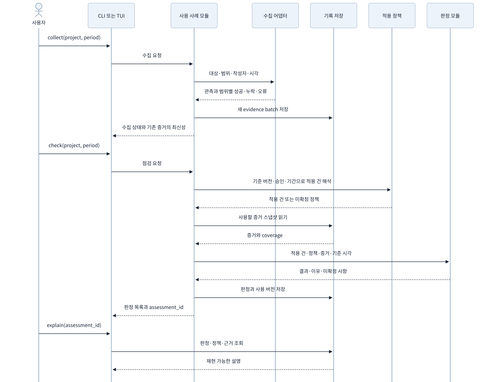
collect와 check는 분리한다. check는 고정된 증거 스냅샷으로 판정하고 explain은 같은 판정의 기준·이유·근거를 다시 읽는다.
네트워크 자동 갱신을 check 내부에 숨기지 않는 초기 인터페이스안이다. collect 실패 시 이전 batch와 실패한 새 시도를 함께 보존한다.
이 대화의 목표 설계이며 현재 미구현.
목표 설계 · 미구현 · 13
목표 CLI의 작업 흐름
명령을 외우는 사람과 자동화가 같은 도메인 작업을 수행할 수 있는가?
프로젝트 문맥을 고른 뒤 조회·수집·점검·설명·문서 작업을 독립 명령으로 수행한다. 읽기 작업은 상태를 암묵적으로 변경하지 않는다.
명령 이름은 제안이다. main의 기존 check와 prototype의 week 동작을 이미 바꿨다는 뜻이 아니다. 모든 CLI 결과에는 텍스트와 JSON 표현을 함께 설계한다.
이 대화의 목표 설계이며 현재 미구현.
목표 설계 · 미구현 · 14
목표 TUI: 사용자 목적에서 근거까지
주차를 바꿔도 남은 작업·원래 기한·판정 근거를 잃지 않는가?
첫 화면은 현재 실행 가능한 일·막힘·마감·이월을 보여준다. 주차는 여러 조회 축 중 하나이며 같은 적용 건을 계속 참조한다.
텍스트 화면 이동 설계이며 완성된 TUI 스크린샷이 아니다. 사용자 체크, 수집 성공, 문서 생성, LMS 제출, 규칙 충족은 각각 별도의 표시다.
이 대화의 목표 설계이며 현재 미구현.
목표 설계 · 미구현 · 15
목표 산출물·제출 상태
PDF를 만들었다는 사실과 제출 완료·기한 준수를 어떻게 구분하는가?
산출물 준비와 외부 제출 확인을 분리한다. 기한 준수는 제출 시각과 고정 마감의 비교값이며 상태를 되돌리는 조건이 아니다.
재제출 시 기존 제출 이력은 보존하고 새 산출물 revision·제출 건을 만든다. 파일 생성·체크 표시만으로 Confirmed로 이동하지 않는다. 지각 여부는 별도 속성이다.
이 대화의 목표 설계이며 현재 미구현.
목표 설계 · 미구현 · 16
목표 증거 수집·정정 상태
실패·누락·오래된 근거·수동 정정을 어떻게 보존할 것인가?
성공한 0건과 미수집을 구분하며 실패로 기존 증거를 덮어쓰지 않는다. 수동 정정도 원래 관측과 나란히 기록한다.
batch마다 새 기록을 만든다는 개념 상태도다. 재수집 중 이전 성공 batch는 계속 남는다. 증거 수집 상태와 규칙 판정값은 별도다. 최신성 기간은 아직 미확정이다.
이 대화의 목표 설계이며 현재 미구현.
목표 설계 · 미구현 · 17
목표 판정 결정 흐름
어떤 조건에서 충족·미충족·확인 필요라고 설명할 수 있는가?
적용 정책과 증거의 충분성을 먼저 확인한다. 횟수만으로 의미 있는 변경·승인된 리뷰·최종 점수를 자동 확정하지 않는다.
부분 충족·점수 환산은 이 흐름 다음의 별도 정책이며, 원문과 승인 근거가 충분한 항목에만 적용한다. 진행 중에도 충족 조건이 취소될 수 있는 규칙은 평가 시점 정책이 필요하다.
이 대화의 목표 설계이며 현재 미구현.
비교·이동 · 18
현재 구현에서 목표 모델로 옮기는 지도
무엇을 살리고 무엇의 책임을 이동시켜야 하는가?
화면 라이브러리 교체보다 기준·기간·적용 건·증거·판정을 먼저 공통 인터페이스로 모은다. 원문·문서 생성·기존 기록은 단계적으로 연결한다.
리팩터링 실행 계획의 초안이다. 오래된 횟수·수동 체크를 새 모델의 검증된 증거로 승격시키지 않는다. GitHub 두 구현은 집계 의미가 달라 그대로 합치지 않는다.